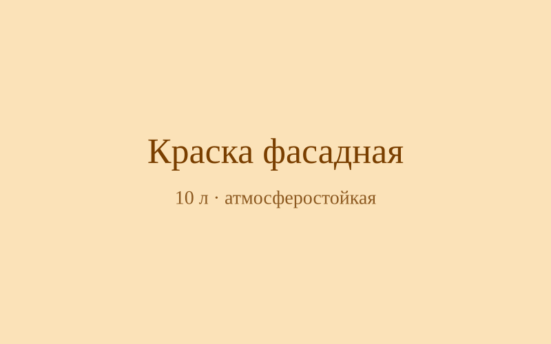

Название товара: Краска фасадная
Описание товара
Акриловая фасадная краска для минеральных и ранее окрашенных поверхностей.
Характеристики товара
Объем: 10 л, расход: 1 л на 8–10 м², цвет: белый матовый.
Подробное описание товара
Краска образует устойчивое покрытие, защищающее стены от осадков и УФ-излучения.
- Быстрое высыхание — 2 часа между слоями.
- Низкий запах и экологичность.
- Колеровка по каталогу RAL.

Нажмите на изображение, чтобы открыть в полном размере в новом окне.